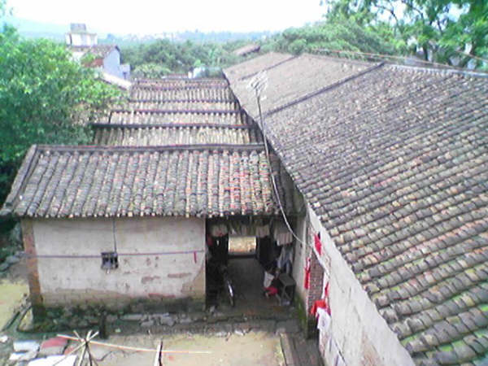
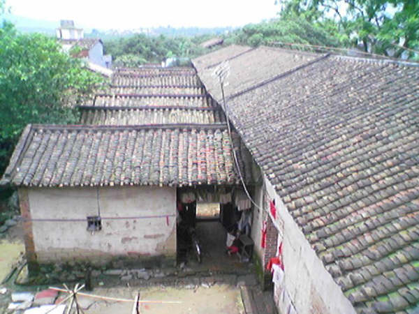
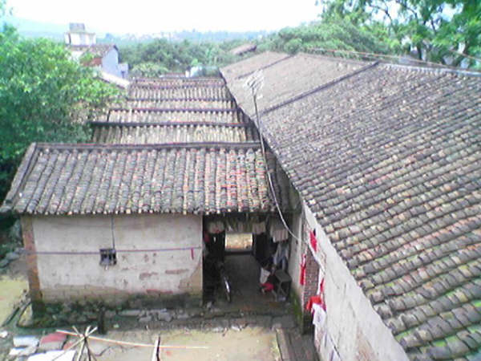

The Edge Outside The Window
6/19/2005 10:23:40 PM
今天吃饭的时候在小餐馆的窗子上照的，和大家分享一下。
给这辑照片取名《The Edge》因为感觉上这些照片很“边缘”，
是城市化的脚步走近时的乡村“边缘”，
淳朴的乡村生活的边缘，
纸醉金迷的边缘，
历史的边缘，
...


 

今天吃饭的时候在小餐馆的窗子上照的，和大家分享一下。
给这辑照片取名《The Edge》因为感觉上这些照片很“边缘”，
是城市化的脚步走近时的乡村“边缘”，
淳朴的乡村生活的边缘，
纸醉金迷的边缘，
历史的边缘，
...
